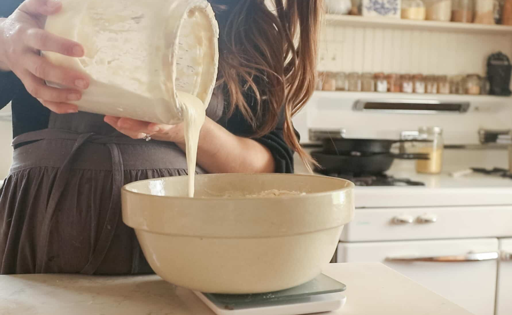
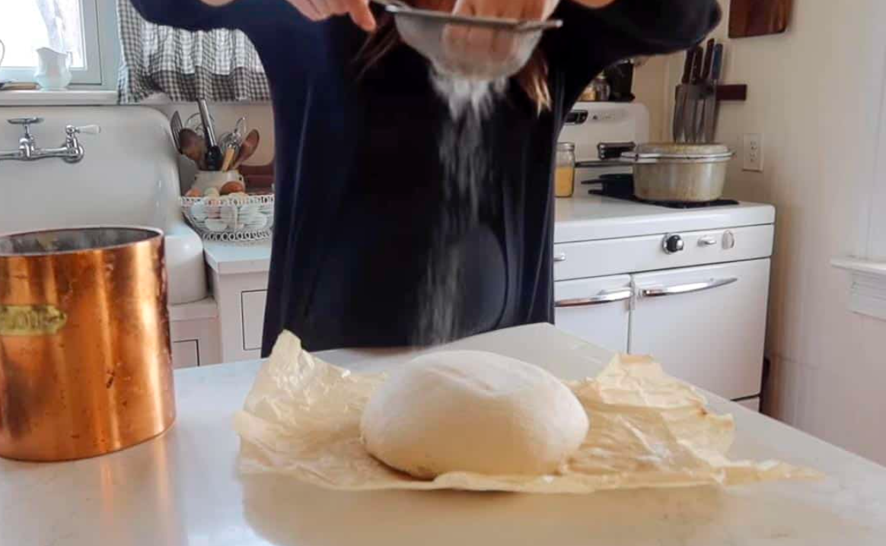
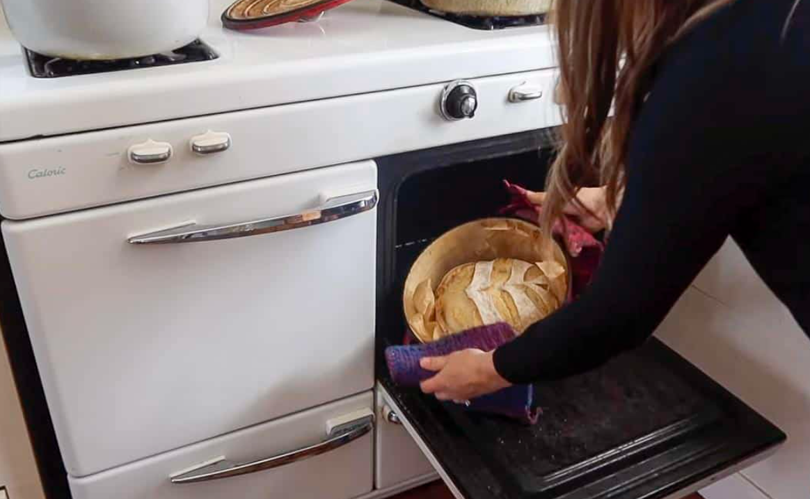

Stretch and Fold

- Grab the edge of the dough and pull up stretching it out as you pull upwards. This may be difficult and you may need to kind of bounce the dough to get it to stretch. Place dough that is in your hands back into the center. Turn the bowl about a quarter turn and complete another stretch and fold. Repeat two more times. This is considered one round.
- Thirty minutes later, complete another round of stretch and folds. Cover and allow the dough to rest another 30 minutes.
- Complete one last stretch and fold round.
- Cover with a lid, damp towel, or plastic wrap. Let the dough bulk ferment in a warm place until it has doubled in size. This could be anywhere from 6-12 hours (or longer) depending on the temperature of your kitchen, maturity of your starter, etc. Be careful not to let it over ferment.
Shape

- Place the dough on a clean work surface that has been lightly dusted with flour. Fold the dough onto itself and roll up. Then shape into a ball by gently spinning it toward you.
- Optional Let the dough sit out for 15-20 minutes uncovered. This prevents the dough from sticking to the tea towel during the overnight rise.
- Turn over and shape. I do this by folding the two sides over to meet in the middle, pinch together and then repeat on the other two sides. This creates surface tension which helps give it more oven spring (a good rise).
- Transfer to a floured banneton or bowl with a floured tea towel (typically floured with rice flour, this is not necessary and all-purpose will work just fine) seam side up.
- Cover with plastic or place in a plastic bag and tie the ends. Let the dough rest for 12-15 hours in the refrigerator. You can also let the bread rise at room temperature for 3-4 hours. I like using the longer rise time in the refrigerator because it is easier to score and feel like the oven spring is better.
Bake

- Preheat a dutch oven to 500 degrees for 1 hour.
- Remove dough from the fridge right before baking. Place dough on a piece of parchment paper.
- Dust with flour, if desired, and score with lame or razor blade. I like to do one large score (called an expansion score) and then a cute design for the other score.
- Carefully, transfer the piece of parchment paper with the dough into the hot dutch oven. Careful not to burn your fingers.
- Place the lid back on and place the dutch oven into the hot oven. Bake for 20 minutes.
- Remove the lid with oven mitts, turn the oven temperature down to 475, and bake an additional 15-25 minutes or until golden brown.